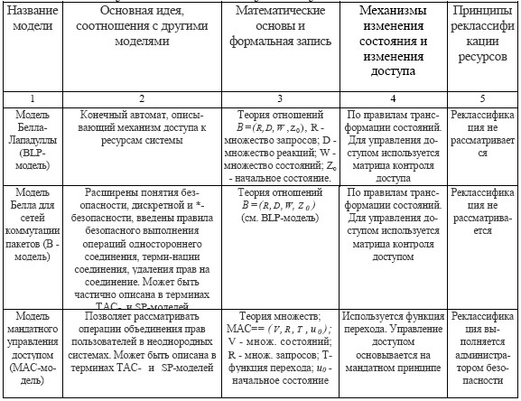
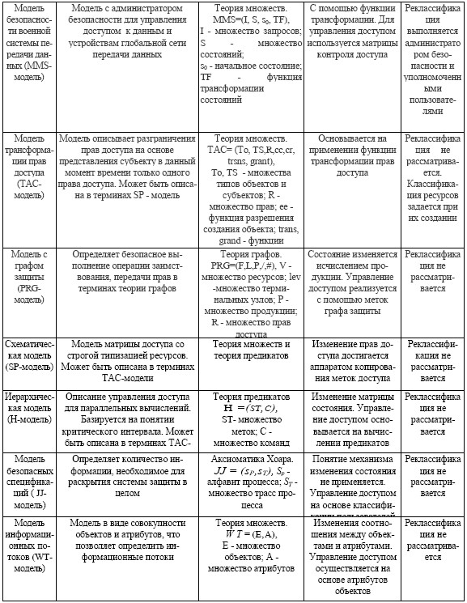

Существующие технологии формального описания процессов обеспечения безопасности информации основываются на понятиях теории конечных автоматов, теории множеств, I теории графов, временной и математической логики, I алгебраических спецификаций. При этом применяемый для описания модели математический аппарат вносит некоторые ограничения на степень детализации процессов защиты, что обусловлено различием физической сущности описываемых с помощью используемых понятий процессов. Например, модели, основанные на теории множеств, с большей детальностью описывают процессы контроля доступа к ресурсам системы, так как имеют развитый аппарат определения взаимоотношений между множествами объектов-ресурсов и объектов-пользователей. В то же время модели, основанные на теории графов, позволяют более глубоко определить процессы защищенной передачи данных.
Основываясь на анализе принципов описания процессов защиты данных и используемого при этом математического аппарата, можно выделить следующие четыре класса формальных моделей безопасности:
– модели трансформации состояний конечного автомата;
– модели заимствования и передачи полномочий;
– семантические модели;
– модели информационных потоков.
Необходимо заметить, что в настоящее время число публикаций, в которых описываются модели безопасности, непрерывно растет. Поэтому в дальнейшем ссылки приводятся только на те работы, в которых описаны модели с явно выраженными отличительными признаками.
Модели трансформации состояния являются наиболее общими и основаны на описании системы в виде конечного автомата. Модели этого класса позволяют наиболее полно описать процессы защиты информации и их взаимосвязь с технологией обработки информации в АСУ. В качестве основы большинство моделей трансформации состояний используют модель Бэлла-Лападулы.
Модели заимствования и передачи полномочий в основном формулируются в понятиях теории множеств или теории графов. В основе всех моделей этого класса в явном или неявном виде лежит матрица контроля доступа, что является существенным ограничением при описании динамических операций присвоения или изменения классификации ресурсов системы.
Семантические модели используют понятия теории множеств и теории предикатов и определяют правила разграничения доступа к ресурсам системы в виде утверждений, которые могут изменяться в процессе выполнения операций модели с помощью специальной системы команд.
Модели информационного потока основываются на предположенной Фентоном решетке безопасности и определяют порядок взаимодействия объектов системы в терминах переноса информации. Появление моделей данного класса сопровождалось достаточно интересными и перспективными теоретическими исследованиями, однако в дальнейшем было показано, что модели информационного потока могут быть описаны в терминах трансформации состояний объектов, получающих или отдающих информацию с соответствующими фифами.
Кроме рассмотренных принципов классификации моделей, необходимо учитывать области их применимости, т. е. среду реализации описываемых механизмов защиты. Обычно рассматриваются следующие среды функционирования: отдельная ЭВМ, вычислительная система, сеть передачи данных, информационновычислительная сеть.
На каждую модель безопасности при ее формулировке накладывается ряд ограничений (или допущений), которые на начальном этапе носят неформальный характер, а затем формализуются. Такими допущениями могут быть наличие в системе администратора службы безопасности (АСБ), который выполняет ряд специфических операций, не свойственных другим пользователям системы, соглашения о многоуровненности ресурсов, наличие у передаваемых сообщений меток, отражающих степень конфиденциальности данных (меток чувствительности) и т. д.
Краткие результаты анализа существующих моделей обеспечения безопасности информации, отражающие основную идею, область применения, соотношения с другими моделями, математические основы, ограничения и допущения, использованные при формулировании модели, показаны в табл. 1.
Для однозначного понимания описываемых далее моделей необходимо ввести ряд определений, основанных на обобщении существующих предложений по терминологии в области защиты информации.
Таблица 1 Результаты анализа существующих моделей


Определение 1.Ресурсом системы называется любое устройство, программа, функция, база данных, файл, которые могут использоваться для выполнения какой-либо операции в АСУ.
Определение 2.Субъект доступа – активный ресурс, в качестве которого могут выступать процесс или устройство, реализующие какиелибо действия над другими ресурсами системы.
В некоторых случаях субъектом может быть оператор АСУ.
Определение 3.Объект доступа – пассивный ресурс, используемый субъектом доступа для выполнения операций в АСУ.
Определение 4.Доступ – процесс использования технических и программных средств, обеспечивающий логическую (или физическую) связь с каким-либо ресурсом АСУ для его функционального использования или получения (модификации) поддерживаемых этим ресурсом данных.
Определение 5.Класс защиты – характеристика степени защищенности объектов доступа, основанная на выделении определенной совокупности требований по защите информации в автоматизированных системах. В некоторых работах вместо данного термина используется термин «уровень безопасности».
Определение 6.Категория доступа – один из классов, к которым может быть отнесен оператор АСУ или субъект доступа при классификации их по предоставленным полномочиям.
Определение 7.Классификация объекта – отнесение ресурса АСУ к одному из классов защиты при определении его значимости в системе, грифа секретности поддерживаемых этим ресурсом данных и множества разрешенных операций.